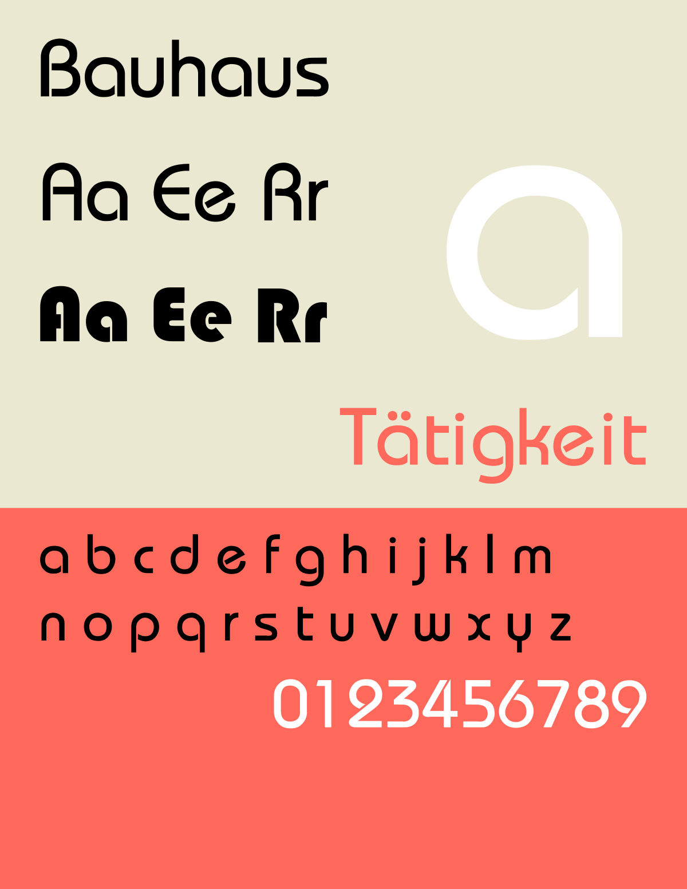
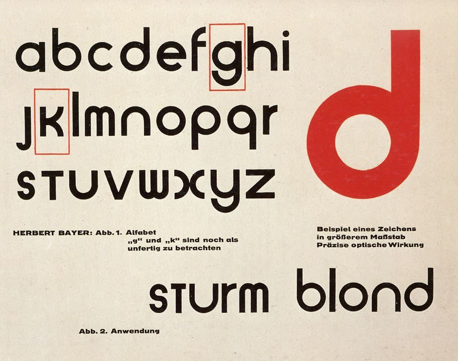

El diseño de la tipografía BAUHAUS está inspirada en la tipografía experimental de Herbert Bayer en 1925 llamada "Universal" y el estilo general que tenía esta escuela. La Bauhaus buscaba modernizar, unificar y estandarizar el diseño en una forma idealística donde se combinara la funcionabilidad y el estilo. Un aspecto de sus muchas reformas fue una serie de tipografías relacionadas a las creadas por la Bauhaus, donde los elementos comunes incluian formas geométricas y letras sin serifa. El resultado final siendo esta tipografía.

Tipografía diseñada por Herbert Bayer en 1925. No contiene mayúsculas o letras de caja alta, contanto únicamente con letras de caja baja altamente inspiradas en formas geométricas.
Como se pude observar, predominan los colores primarios junto al negro y blanco; en cuanto al uso de las formas, el tríangulo, cuadrado y círculo eran los elementos principales.
¡Ten un día mágico!

8987-9598
De la rotonda Mondstad 200 metros al oeste.
copyright © 2021 MAGIO